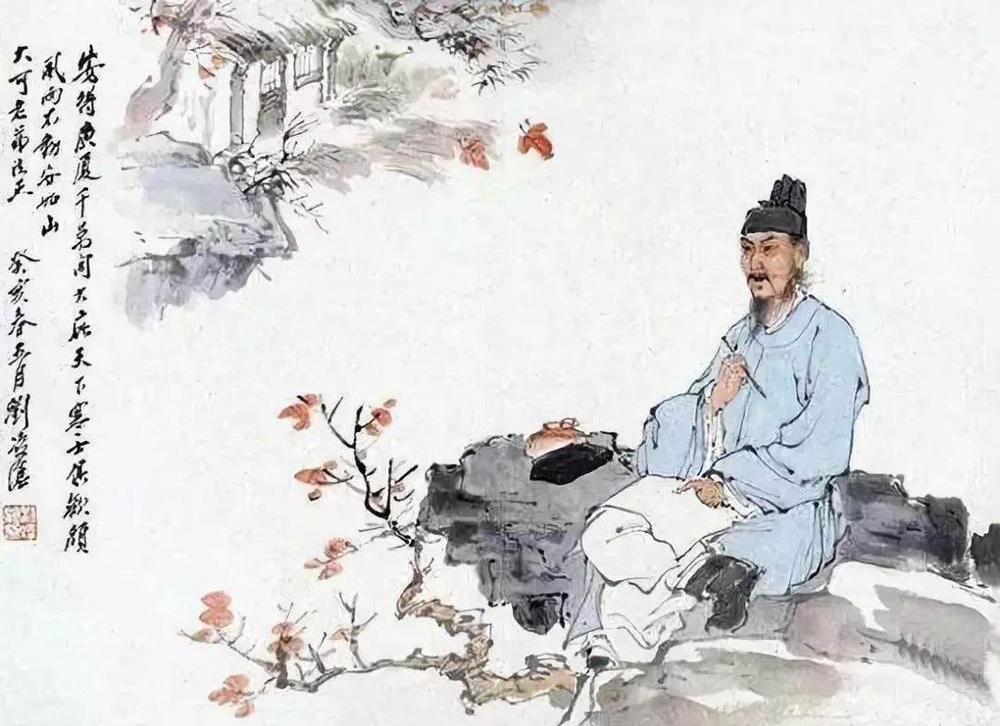

Du Fu was a prominent Chinese poet of the Tang dynasty. Along with Li Bai (Li Po), he is frequently called the greatest of the Chinese poets.
His greatest ambition was to serve his country as a successful civil servant, but he proved unable to make the necessary accommodations. His life, like the whole country, was devastated by the An Lushan Rebellion of 755, and his last 15 years were a time of almost constant unrest.
Although initially he was little-known to other writers, his works came to be hugely influential in both Chinese and Japanese literary culture. Of his poetic writing, nearly fifteen hundred poems have been preserved over the ages.
He has been called the "Poet-Historian" and the "Poet-Sage" by Chinese critics, while the range of his work has allowed him to be introduced to Western readers as "the Chinese Virgil, Horace, Ovid, Shakespeare, Milton, Burns, Wordsworth, Béranger, Hugo or Baudelaire"
Li Bai (701–762), also known as Li Bo, courtesy name Taibai, was a Chinese poet acclaimed from his own day to the present as a genius and a romantic figure who took traditional poetic forms to new heights. He and his friend Du Fu (712–770) were the two most prominent figures in the flourishing of Chinese poetry in the Tang dynasty, which is often called the "Golden Age of Chinese Poetry". The expression "Three Wonders" denote Li Bai's poetry, Pei Min's swordplay, and Zhang Xu's calligraphy.[1]
Around a thousand poems attributed to him are extant. His poems have been collected into the most important Tang dynasty poetry anthology Heyue yingling ji,[2] compiled in 753 by Yin Fan, and thirty-four of his poems are included in the anthology Three Hundred Tang Poems, which was first published in the 18th century.[citation needed] In the same century, translations of his poems began to appear in Europe. The poems were models for celebrating the pleasures of friendship, the depth of nature, solitude, and the joys of drinking wine.
Among the most famous are "Waking from Drunkenness on a Spring Day", "The Hard Road to Shu", and "Quiet Night Thought", which still appear in school texts in China. In the West, multilingual translations of Li's poems continue to be made. His life has even taken on a legendary aspect, including tales of drunkenness, chivalry, and the well-known fable that Li drowned when he reached from his boat to grasp the moon's reflection in the river while drunk.